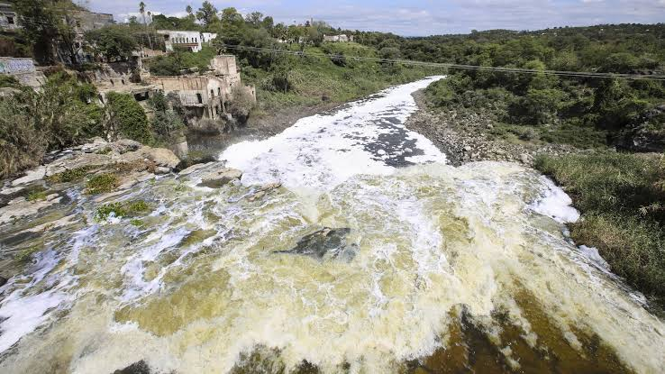
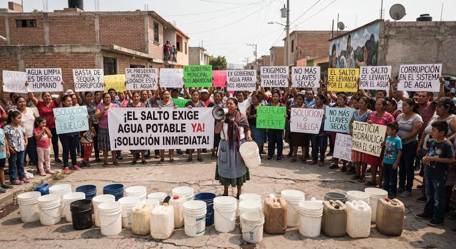
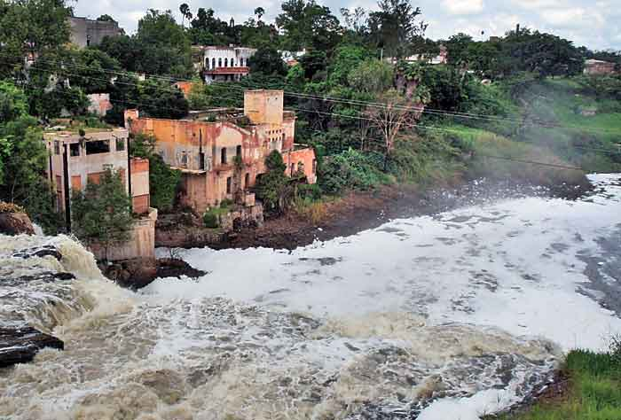

Problemas del Agua
En el Salto
En El Salto, Jalisco, el problema del agua es una crisis doble y extrema: por un lado, el municipio sufre una contaminación tóxica crónica en sus ríos y presas debido a su corredor industrial; por otro, enfrenta un grave desabasto de agua potable en sus colonias por la sobreexplotación de acuíferos y fallas en la red de distribución.
La situación en el municipio se divide en tres ejes principales:
1. Contaminación industrial y urbana (Río Santiago y presas)
- Vertidos tóxicos en el Río Santiago. El municipio forma parte de uno de los corredores industriales más grandes de Jalisco. Cientos de empresas (químicas, farmacéuticas, metalmecánicas y alimentarias), sumadas a drenajes municipales sin tratar del Área Metropolitana de Guadalajara, vierten desechos en el río. Estudios académicos de instituciones como la Universidad de Guadalajara han detectado metales pesados como arsénico, plomo, mercurio y cromo.
- Degradación de presas y canales. Cuerpos de agua locales como la presa de El Ahogado y la presa de Las Pintas (que forma parte del sistema antiguo de abastecimiento metropolitano) padecen invasiones irregulares, acumulación de basura y descargas residuales. Además, colectivos vecinales como Un Salto de Vida A.C. han denunciado el manejo inadecuado de lodos tóxicos extraídos durante trabajos de desazolve cerca de zonas habitacionales.
2. Escasez y fallas en el suministro potable
- Sobreexplotación del acuífero de Toluquilla. El Salto depende en gran medida de pozos que extraen agua del manto freático de Toluquilla, uno de los más sobreexplotados y contaminados de la región. Al bajar el nivel del agua subterránea, varios pozos pierden capacidad o requieren perforaciones más profundas.
- Infraestructura vieja y tandeos. Gran parte de la red de tuberías tiene décadas de antigüedad y presenta corrosión, lo que provoca fugas constantes donde se pierde hasta la mitad del agua distribuida. Esto deriva en cortes prolongados, baja presión y esquemas de tandeo en colonias como La Azucena, El Verde, Las Pintitas y fraccionamientos de la zona de Los Laureles.
3. Impacto directo en la salud y la vida diaria
- Enfermedades crónicas. Investigaciones científicas y reportes médicos han vinculado la exposición prolongada al agua y a los gases tóxicos del río (como el ácido sulfhídrico) con tasas elevadas de insuficiencia renal, padecimientos respiratorios y ciertos tipos de cáncer entre los habitantes de El Salto y Juanacatlán.
- Gasto familiar y conflictos. Ante la falta de suministro continuo o la llegada de agua turbia a las llaves, las familias se ven obligadas a comprar garrafones o pagar pipas particulares, afectando su economía y generando protestas constantes para exigir soluciones de fondo.
Imagenes y Videos Demostrativos:




